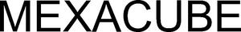

Trade Mark Journal No.2025/042 17 October 2025
WO0000001877758 (9,37,42)
Office of origin: Japan
Date of International Registration:30 July 2025
Date of designation in the UK:
30 July 2025

International priority date claimed: 27 February 2025
(Japan)
- Class 9
- Measurement apparatus and instruments for vehicle engine emission, and parts and fittings therefor; measurement apparatus and instruments for engine emission, and parts and fittings therefor; measurement apparatus and instruments for emission, and parts and fittings therefor; measurement apparatus and instruments for exhaust gases, and parts and fittings therefor; measurement apparatus and instruments for process gases, and parts and fittings therefor; measuring and analyzing apparatus and instruments for vehicle engine emission, and parts and fittings therefor; measuring and analyzing apparatus and instruments for engine emission, and parts and fittings therefor; measuring and analyzing apparatus and instruments for emission, and parts and fittings therefor; measuring and analyzing apparatus and instruments for exhaust gases, and parts and fittings therefor; measuring and analyzing apparatus and instruments for process gases, and parts and fittings therefor; on-board measurement apparatus and instruments for vehicle engine emission, and parts and fittings therefor; on-board measurement apparatus and instruments for engine emission, and parts and fittings therefor; on-board measurement apparatus and instruments for emission, and parts and fittings therefor; on-board measurement apparatus and instruments for exhaust gases, and parts and fittings therefor; on-board measurement apparatus and instruments for process gases, and parts and fittings therefor; on-board measuring and analyzing apparatus and instruments for vehicle engine emission, and parts and fittings therefor; on-board measuring and analyzing apparatus and instruments for engine emission, and parts and fittings therefor; on-board measuring and analyzing apparatus and instruments for emission, and parts and fittings therefor; on-board measuring and analyzing apparatus and instruments for exhaust gases, and parts and fittings therefor; on-board measuring and analyzing apparatus and instruments for process gases, and parts and fittings therefor; portable measurement apparatus and instruments for vehicle engine emission, and parts and fittings therefor; portable measurement apparatus and instruments for engine emission, and parts and fittings therefor; portable measurement apparatus and instruments for emission, and parts and fittings therefor; portable measurement apparatus and instruments for exhaust gases, and parts and fittings therefor; portable measurement apparatus and instruments for process gases, and parts and fittings therefor; portable measuring and analyzing apparatus and instruments for vehicle engine emission, and parts and fittings therefor; portable measuring and analyzing apparatus and instruments for engine emission, and parts and fittings therefor; portable measuring and analyzing apparatus and instruments for emission, and parts and fittings therefor; portable measuring and analyzing apparatus and instruments for exhaust gases, and parts and fittings therefor; portable measuring and analyzing apparatus and instruments for process gases, and parts and fittings therefor; measurement apparatus and instruments for automobile emission, and parts and fittings therefor; measuring and analyzing apparatus and instruments for automobile emission, and parts and fittings therefor; measurement apparatus and instruments for vehicle emission, and parts and fittings therefor; measuring and analyzing apparatus and instruments for vehicle emission, and parts and fittings therefor; gas measurement apparatus and instruments, and parts and fittings therefor; gas measuring and analyzing apparatus and instruments, and parts and fittings therefor; vehicle engine testing apparatus and instruments, and parts and fittings therefor; automotive engine testing apparatus and instruments, and parts and fittings therefor; engine testing apparatus and instruments, and parts and fittings therefor; computer software for controlling measurement apparatus and instruments for vehicle engine emission; computer software for controlling measurement apparatus and instruments for engine emission; computer software for controlling measurement apparatus and instruments for emission; computer software for controlling measurement apparatus and instruments for exhaust gases; computer software for controlling measurement apparatus and instruments for process gases; computer software for controlling gas measurement apparatus and instruments; computer software for controlling measuring and analyzing apparatus and instruments for vehicle engine emission; computer software for controlling measuring and analyzing apparatus and instruments for engine emission; computer software for controlling measuring and analyzing apparatus and instruments for emission; computer software for controlling measuring and analyzing apparatus and instruments for exhaust gases; computer software for controlling measuring and analyzing apparatus and instruments for process gases; computer software for controlling gas measuring and analyzing apparatus and instruments; computer software for controlling engine testing apparatus and instruments; computer software; measuring or testing machines and instruments; laboratory apparatus and instruments; optical machines and apparatus; cinematographic machines and apparatus; photographic machines and apparatus.
- Class 37
- Repair or maintenance of measurement apparatus and instruments for vehicle engine emission; repair or maintenance of measurement apparatus and instruments for engine emission; repair or maintenance of measurement apparatus and instruments for emission; repair or maintenance of measurement apparatus and instruments for exhaust gases; repair or maintenance of measurement apparatus and instruments for process gases; repair or maintenance of measuring and analyzing apparatus and instruments for vehicle engine emission; repair or maintenance of measuring and analyzing apparatus and instruments for engine emission; repair or maintenance of measuring and analyzing apparatus and instruments for emission; repair or maintenance of measuring and analyzing apparatus and instruments for exhaust gases; repair or maintenance of measuring and analyzing apparatus and instruments for process gases; repair or maintenance of on-board measurement apparatus and instruments for vehicle engine emission; repair or maintenance of on-board measurement apparatus and instruments for engine emission; repair or maintenance of on-board measurement apparatus and instruments for emission; repair or maintenance of on-board measurement apparatus and instruments for exhaust gases; repair or maintenance of on-board measurement apparatus and instruments for process gases; repair or maintenance of on-board measuring and analyzing apparatus and instruments for vehicle engine emission; repair or maintenance of on-board measuring and analyzing apparatus and instruments for engine emission; repair or maintenance of on-board measuring and analyzing apparatus and instruments for emission; repair or maintenance of on-board measuring and analyzing apparatus and instruments for exhaust gases; repair or maintenance of on-board measuring and analyzing apparatus and instruments for process gases; repair or maintenance of portable measurement apparatus and instruments for vehicle engine emission; repair or maintenance of portable measurement apparatus and instruments for engine emission; repair or maintenance of portable measurement apparatus and instruments for emission; repair or maintenance of portable measurement apparatus and instruments for exhaust gases; repair or maintenance of portable measurement apparatus and instruments for process gases; repair or maintenance of portable measuring and analyzing apparatus and instruments for vehicle engine emission; repair or maintenance of portable measuring and analyzing apparatus and instruments for engine emission; repair or maintenance of portable measuring and analyzing apparatus and instruments for emission; repair or maintenance of portable measuring and analyzing apparatus and instruments for exhaust gases; repair or maintenance of portable measuring and analyzing apparatus and instruments for process gases; repair or maintenance of measurement apparatus and instruments for automobile emission; repair or maintenance of measuring and analyzing apparatus and instruments for automobile emission; repair or maintenance of measurement apparatus and instruments for vehicle emission; repair or maintenance of measuring and analyzing apparatus and instruments for vehicle emission; repair or maintenance of gas measurement apparatus and instruments; repair or maintenance of gas measuring and analyzing apparatus and instruments; repair or maintenance of vehicle engine testing apparatus and instruments; repair or maintenance of automotive engine testing apparatus and instruments; repair or maintenance of engine testing apparatus and instruments; repair or maintenance of measuring or testing machines and instruments; repair or maintenance of laboratory apparatus and instruments; repair or maintenance of optical machines and apparatus; repair or maintenance of cinematographic machines and apparatus; repair or maintenance of photographic machines and apparatus.
- Class 42
- Rental of measurement apparatus and instruments for vehicle engine emission; rental of measurement apparatus and instruments for engine emission; rental of measurement apparatus and instruments for emission; rental of measurement apparatus and instruments for exhaust gases; rental of measurement apparatus and instruments for process gases; rental of measuring and analyzing apparatus and instruments for vehicle engine emission; rental of measuring and analyzing apparatus and instruments for engine emission; rental of measuring and analyzing apparatus and instruments for emission; rental of measuring and analyzing apparatus and instruments for exhaust gases; rental of measuring and analyzing apparatus and instruments for process gases; rental of on-board measurement apparatus and instruments for vehicle engine emission; rental of on-board measurement apparatus and instruments for engine emission; rental of on-board measurement apparatus and instruments for emission; rental of on-board measurement apparatus and instruments for exhaust gases; rental of on-board measurement apparatus and instruments for process gases; rental of on-board measuring and analyzing apparatus and instruments for vehicle engine emission; rental of on-board measuring and analyzing apparatus and instruments for engine emission; rental of on-board measuring and analyzing apparatus and instruments for emission; rental of on-board measuring and analyzing apparatus and instruments for exhaust gases; rental of on-board measuring and analyzing apparatus and instruments for process gases; rental of portable measurement apparatus and instruments for vehicle engine emission; rental of portable measurement apparatus and instruments for engine emission; rental of portable measurement apparatus and instruments for emission; rental of portable measurement apparatus and instruments for exhaust gases; rental of portable measurement apparatus and instruments for process gases; rental of portable measuring and analyzing apparatus and instruments for vehicle engine emission; rental of portable measuring and analyzing apparatus and instruments for engine emission; rental of portable measuring and analyzing apparatus and instruments for emission; rental of portable measuring and analyzing apparatus and instruments for exhaust gases; rental of portable measuring and analyzing apparatus and instruments for process gases; rental of measurement apparatus and instruments for automobile emission; rental of measuring and analyzing apparatus and instruments for automobile emission; rental of measurement apparatus and instruments for vehicle emission; rental of measuring and analyzing apparatus and instruments for vehicle emission; rental of gas measurement apparatus and instruments; rental of gas measuring and analyzing apparatus and instruments; rental of vehicle engine testing apparatus and instruments; rental of automotive engine testing apparatus and instruments; rental of engine testing apparatus and instruments; rental of measuring or testing machines and instruments; rental of laboratory apparatus and instruments; calibration of measurement apparatus and instruments for vehicle engine emission; calibration of measurement apparatus and instruments for engine emission; calibration of measurement apparatus and instruments for emission; calibration of measurement apparatus and instruments for exhaust gases; calibration of measurement apparatus and instruments for process gases; calibration of measuring and analyzing apparatus and instruments for vehicle engine emission; calibration of measuring and analyzing apparatus and instruments for engine emission; calibration of measuring and analyzing apparatus and instruments for emission; calibration of measuring and analyzing apparatus and instruments for exhaust gases; calibration of measuring and analyzing apparatus and instruments for process gases; calibration of on-board measurement apparatus and instruments for vehicle engine emission; calibration of on-board measurement apparatus and instruments for engine emission; calibration of on-board measurement apparatus and instruments for emission; calibration of on-board measurement apparatus and instruments for exhaust gases; calibration of on-board measurement apparatus and instruments for process gases; calibration of on-board measuring and analyzing apparatus and instruments for vehicle engine emission; calibration of on-board measuring and analyzing apparatus and instruments for engine emission; calibration of on-board measuring and analyzing apparatus and instruments for emission; calibration of on-board measuring and analyzing apparatus and instruments for exhaust gases; calibration of on-board measuring and analyzing apparatus and instruments for process gases; calibration of portable measurement apparatus and instruments for vehicle engine emission; calibration of portable measurement apparatus and instruments for engine emission; calibration of portable measurement apparatus and instruments for emission; calibration of portable measurement apparatus and instruments for exhaust gases; calibration of portable measurement apparatus and instruments for process gases; calibration of portable measuring and analyzing apparatus and instruments for vehicle engine emission; calibration of portable measuring and analyzing apparatus and instruments for engine emission; calibration of portable measuring and analyzing apparatus and instruments for emission; calibration of portable measuring and analyzing apparatus and instruments for exhaust gases; calibration of portable measuring and analyzing apparatus and instruments for process gases; calibration of measurement apparatus and instruments for automobile emission; calibration of measuring and analyzing apparatus and instruments for automobile emission; calibration of measurement apparatus and instruments for vehicle emission; calibration of measuring and analyzing apparatus and instruments for vehicle emission; calibration of gas measurement apparatus and instruments; calibration of gas measuring and analyzing apparatus and instruments; calibration of vehicle engine testing apparatus and instruments; calibration of automotive engine testing apparatus and instruments; calibration of engine testing apparatus and instruments; calibration of measuring or testing machines and instruments; calibration of laboratory apparatus and instruments; calibration of optical machines and apparatus; calibration of cinematographic machines and apparatus; calibration of photographic machines and apparatus; design of measurement apparatus and instruments for vehicle engine emission; design of measurement apparatus and instruments for engine emission; design of measurement apparatus and instruments for emission; design of measurement apparatus and instruments for exhaust gases; design of measurement apparatus and instruments for process gases; design of measuring and analyzing apparatus and instruments for vehicle engine emission; design of measuring and analyzing apparatus and instruments for engine emission; design of measuring and analyzing apparatus and instruments for emission; design of measuring and analyzing apparatus and instruments for exhaust gases; design of measuring and analyzing apparatus and instruments for process gases; design of on-board measurement apparatus and instruments for vehicle engine emission; design of on-board measurement apparatus and instruments for engine emission; design of on-board measurement apparatus and instruments for emission; design of on-board measurement apparatus and instruments for exhaust gases; design of on-board measurement apparatus and instruments for process gases; design of on-board measuring and analyzing apparatus and instruments for vehicle engine emission; design of on-board measuring and analyzing apparatus and instruments for engine emission; design of on-board measuring and analyzing apparatus and instruments for emission; design of on-board measuring and analyzing apparatus and instruments for exhaust gases; design of on-board measuring and analyzing apparatus and instruments for process gases; design of portable measurement apparatus and instruments for vehicle engine emission; design of portable measurement apparatus and instruments for engine emission; design of portable measurement apparatus and instruments for emission; design of portable measurement apparatus and instruments for exhaust gases; design of portable measurement apparatus and instruments for process gases; design of portable measuring and analyzing apparatus and instruments for vehicle engine emission; design of portable measuring and analyzing apparatus and instruments for engine emission; design of portable measuring and analyzing apparatus and instruments for emission; design of portable measuring and analyzing apparatus and instruments for exhaust gases; design of portable measuring and analyzing apparatus and instruments for process gases; design of measurement apparatus and instruments for automobile emission; design of measuring and analyzing apparatus and instruments for automobile emission; design of measurement apparatus and instruments for vehicle emission; design of measuring and analyzing apparatus and instruments for vehicle emission; design of gas measurement apparatus and instruments; design of gas measuring and analyzing apparatus and instruments; design of vehicle engine testing apparatus and instruments; design of automotive engine testing apparatus and instruments; design of engine testing apparatus and instruments; design of measuring or testing machines and instruments; design of laboratory apparatus and instruments; design of optical machines and apparatus; design of cinematographic machines and apparatus; design of photographic machines and apparatus; design, programming and maintenance of computer software for controlling measurement apparatus and instruments for vehicle engine emission; design, programming and maintenance of computer software for controlling measurement apparatus and instruments for engine emission; design, programming and maintenance of computer software for controlling measurement apparatus and instruments for emission; design, programming and maintenance of computer software for controlling measurement apparatus and instruments for exhaust gases; design, programming and maintenance of computer software for controlling measurement apparatus and instruments for process gases; design, programming and maintenance of computer software for controlling gas measurement apparatus and instruments; design, programming and maintenance of computer software for controlling measuring and analyzing apparatus and instruments for vehicle engine emission; design, programming and maintenance of computer software for controlling measuring and analyzing apparatus and instruments for engine emission; design, programming and maintenance of computer software for controlling measuring and analyzing apparatus and instruments for emission; design, programming and maintenance of computer software for controlling measuring and analyzing apparatus and instruments for exhaust gases; design, programming and maintenance of computer software for controlling measuring and analyzing apparatus and instruments for process gases; design, programming and maintenance of computer software for controlling gas measuring and analyzing apparatus and instruments; design, programming and maintenance of computer software for controlling engine testing apparatus and instruments; design, programming and maintenance of computer software; rental of computer software for controlling measurement apparatus and instruments for vehicle engine emission; rental of computer software for controlling measurement apparatus and instruments for engine emission; rental of computer software for controlling measurement apparatus and instruments for emission; rental of computer software for controlling measurement apparatus and instruments for exhaust gases; rental of computer software for controlling measurement apparatus and instruments for process gases; rental of computer software for controlling gas measurement apparatus and instruments; rental of computer software for controlling measuring and analyzing apparatus and instruments for vehicle engine emission; rental of computer software for controlling measuring and analyzing apparatus and instruments for engine emission; rental of computer software for controlling measuring and analyzing apparatus and instruments for emission; rental of computer software for controlling measuring and analyzing apparatus and instruments for exhaust gases; rental of computer software for controlling measuring and analyzing apparatus and instruments for process gases; rental of computer software for controlling gas measuring and analyzing apparatus and instruments; rental of computer software for controlling engine testing apparatus and instruments; rental of computer software; providing on-line non-downloadable computer software for controlling measurement apparatus and instruments for vehicle engine emission; providing on-line non-downloadable computer software for controlling measurement apparatus and instruments for engine emission; providing on-line non-downloadable computer software for controlling measurement apparatus and instruments for emission; providing on-line non-downloadable computer software for controlling measurement apparatus and instruments for exhaust gases; providing on-line non-downloadable computer software for controlling measurement apparatus and instruments for process gases; providing on-line non-downloadable computer software for controlling gas measurement apparatus and instruments; providing on-line non-downloadable computer software for controlling measuring and analyzing apparatus and instruments for vehicle engine emission; providing on-line non-downloadable computer software for controlling measuring and analyzing apparatus and instruments for engine emission; providing on-line non-downloadable computer software for controlling measuring and analyzing apparatus and instruments for emission; providing on-line non-downloadable computer software for controlling measuring and analyzing apparatus and instruments for exhaust gases; providing on-line non-downloadable computer software for controlling measuring and analyzing apparatus and instruments for process gases; providing on-line non-downloadable computer software for controlling gas measuring and analyzing apparatus and instruments; providing on-line non-downloadable computer software for controlling engine testing apparatus and instruments; providing on-line non-downloadable computer software; designing of machines, apparatus, instruments [including their parts] or systems composed of such machines, apparatus and instruments; computer software design, computer programming, or maintenance of computer software; technological advice relating to computers, automobiles and industrial machines; testing or research on machines, apparatus and instruments.
HORIBA, Ltd.
Representative: Okeno IP Professionals, PAC, Dojima NS Bldg. 3F, 2-1-18, Dojima,, Kita-ku, Osaka-shi, Osaka 530-0003, JAPAN